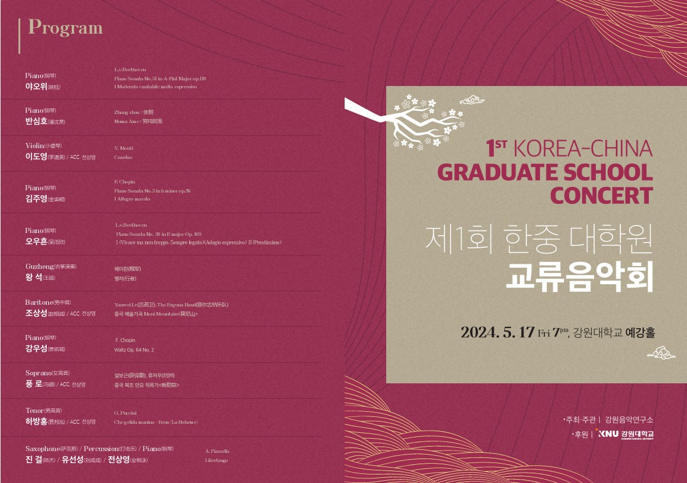
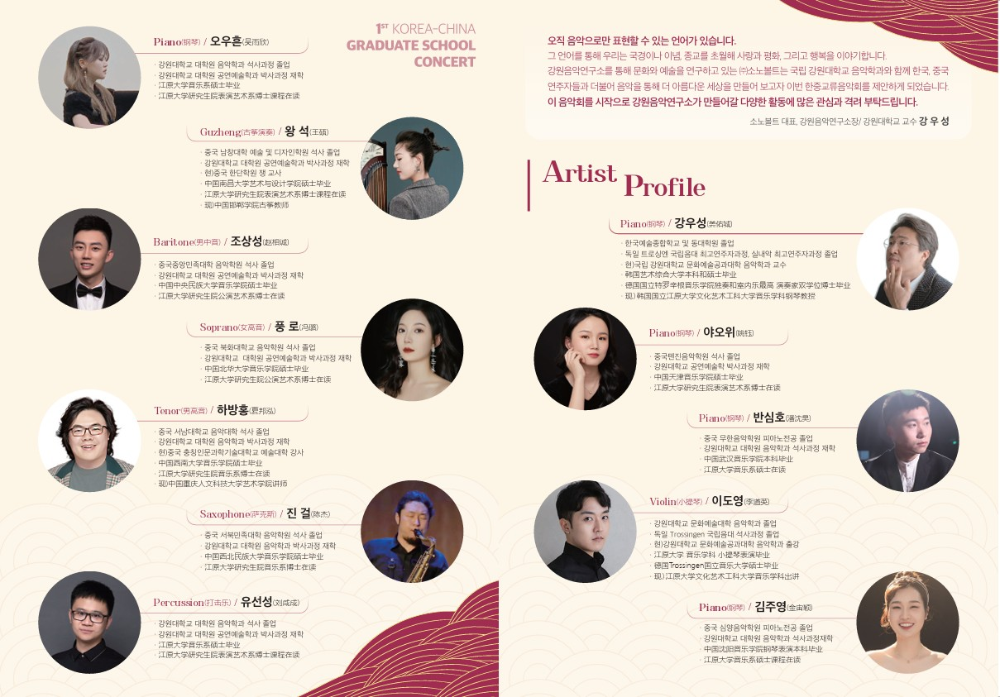
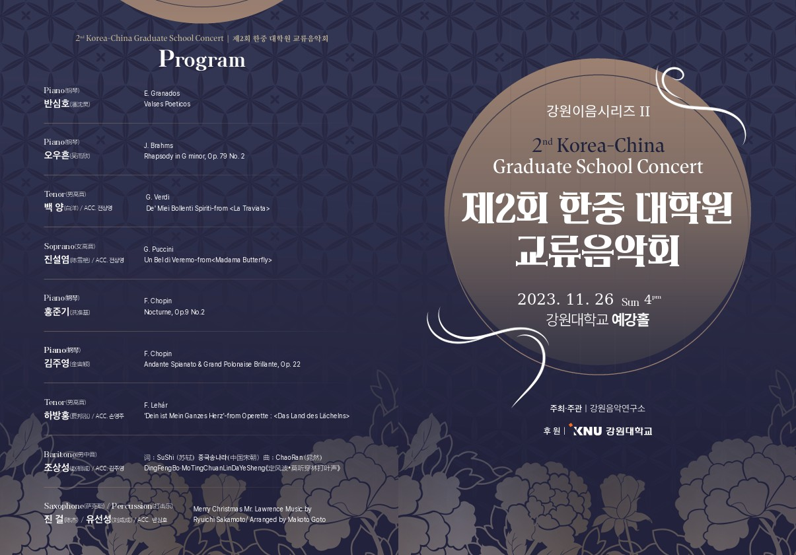
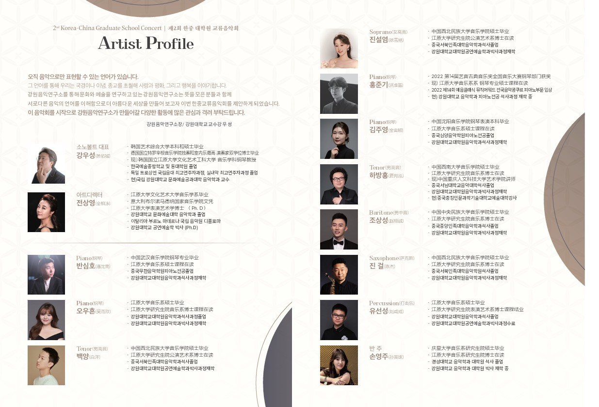
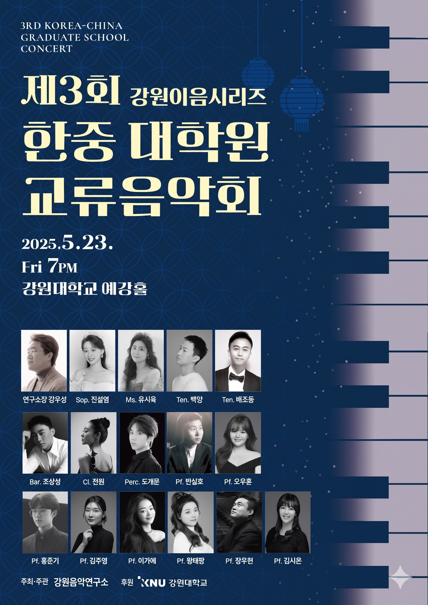

강원이음시리즈 I : 제1회 한·중 대학원 교류음악회


국경과 이념을 넘어 음악의 보편적 언어로 연대하는 강원음악연구소의 대표 연구·연주 실적입니다. 한국과 중국의 차세대 음악 학도 및 전문 연주자들이 함께 예술적 성취를 공유하고 문화적 교류의 지평을 넓혀갑니다.
“오직 음악으로만 표현할 수 있는 언어가 있습니다. 그 언어를 통해 우리는 국경이나 이념, 종교를 초월해 사랑과 평화, 그리고 행복을 이야기합니다.”
강원음악연구소는 문화와 예술을 연구하며, 서로 다른 음악의 언어를 깊이 있게 이해함으로써 더 아름다운 세상을 만들고자 한·중 대학원 교류음악회를 정례화하여 실천해 왔습니다.




